Sona Technical Report：用一个生成式模型替换音乐推荐全级联
Sona 是 Yandex Music 面向 My Vibe 音乐流提出的单模型生成式推荐系统，作者署名为 Sona Team，一作主机构为 Yandex Music。论文于 2026 年 8 月 11 日提交，唯一论文入口为 arXiv:2608.11015。本轮未在论文入口或可核验官方来源中找到公开代码与模型权重，因此以下分析以技术报告披露的架构、离线消融和线上 A/B 为边界，不把它视为可完整外部复现的开源方案。
成熟音乐推荐把候选生成、预排和精排拆成十多个独立组件，重复计算用户表征并依赖数百个特征；同时，被动连续播放、反复收听与长期探索之间的矛盾，使一个模型端到端替换整条链路比一般的下一物品预测更困难。
1. 背景和问题
Yandex Music 的 My Vibe 不是“用户先输入查询，再返回答案”的搜索面，也不是每次都要求用户主动点选的内容列表。智能音箱开始播放时，用户通常没有指定艺人、曲风、情绪或场景，系统必须仅依据历史行为启动并维持一条连续音乐流。反馈也更含混：播放时长和跳过频繁发生，点赞、点踩较稀疏；用户重新听熟悉歌曲往往是满意信号，而不是需要去重的失败。系统一方面要用熟悉曲目稳定收听时长，另一方面又要探索可能成为新偏好的歌曲，短期参与和长期发现并不完全同向。
此前生产链路用超过 15 个候选生成器提供多路召回，再依次经过预排和精排。各组件独立训练，排序模型读取数百个特征，其中还包括 Argus 这类大型序列 Transformer 和 target-attention scorer 的输出。这种级联的好处是职责清晰、业务规则容易逐层接入，但代价是同一用户状态被反复编码，生成阶段只优化召回而排序阶段只优化局部打分，两个阶段看到的数据分布和目标也可能错位。更重要的是，一旦召回器没有把目标曲目放进候选集，后续再强的 ranker 也无法补救；而召回器按 decoder likelihood 给出的顺序又未必对应多种真实反馈的优先级。
Sona 的问题不是简单地“把召回器换成自回归模型”，而是同时回答三个生产问题。第一，音乐目录巨大且持续增长，decoder 不可能把每个原子 track ID 直接作为一个稳定词元；系统需要一个既能压缩词表、又能保留内容和协同行为邻近性的 Semantic ID。第二，生成和 item-level ranking 若要合并，必须共享一次计算得到的用户表征，同时仍能读取长达 8192 个事件的历史。第三，大 teacher 可以在训练中吸收一年日志和更长上下文，却不能因吞吐和延迟成本进入最终 serving，因此需要把它的多反馈排序知识蒸馏进较小的 Ranking Module。
论文选择的边界也值得提前讲清。所谓“one model”指最终服务路径只有共享 encoder、decoder 与 Ranking Module；离线 semantic tokenizer、训练期 Teacher Ranker、确定性的 SID-to-item 索引和业务硬规则仍然存在。它不是取消所有系统组件，而是把原本分散在十多个候选生成器、预排和精排中的主要学习能力合并为一个共同训练、一次编码的模型。报告最有价值之处在于给出逐步上线证据：先验证 teacher 的目标和 SID features，再验证生成器替换、蒸馏、长历史压缩，最后才让 Sona 替换完整级联。
从大模型视角看，这项工作把“共享 backbone + 自回归生成 + teacher distillation”的范式放进高频推荐服务，但没有直接使用自然语言生成推荐理由。它生成的是三层离散 Semantic ID，reward 仍来自播放、跳过、点赞等行为。因而它更像把语言模型的序列建模与扩展规律迁移到推荐基础设施，而不是把通用 LLM 直接塞进线上 ranker。该区别很重要：报告中的线上收益不能被解释为“LLM 理解音乐”，其核心仍是日志监督、协同语义、长历史建模与系统共训。
另一个容易被最终 uplift 掩盖的问题是监督密度。生成任务可以在每个序列位置得到 next-token target，而点赞、点踩等排序标签稀疏且分布偏斜；如果只联合训练稀疏行为 head，共享 encoder 可能更快学会热门与短期反馈，却没有足够信号重建旧级联中特征工程承载的结构。Sona 先让 Teacher Ranker 用一年 timeline 和 NIP 预训练吸收长期统计，再对 decoder 当前 rollout 做密集打分，实质上是在“长期数据太贵、线上 teacher 太慢”之间建立知识压缩通道。
2. 方法
2.1 Semantic Tokenizer：把曲目压成可生成的协同语义坐标
Sona 先在离线阶段为每首合格曲目生成固定的三层 Semantic ID。输入不是单一音频 embedding：冻结的 Qwen2.5-Omni 读取前 90 秒 mel-spectrogram，以及包含标题、艺人、标签、年份等元数据的文本 prompt，只执行 prefill，不做解码；最后一层最多 640 个 hidden vectors 交给 4 层、4 heads、宽度 512 的 refinement transformer，均值池化后得到 256 维曲目向量。这样把音色与元数据放进同一表示，但仍不能保证“用户愿意连续收听的两首歌”在向量空间里相近。 因此 refinement 使用两类互不重叠的协同配对：production recommender 同次返回中的跨艺人 co-served 曲目，三周窗口提供约 2.2–2.4 亿对；以及三个月日志中同一艺人的高 NPMI co-listening 曲目，提供约 2000 万对。总目标把协同对比和内容保持合在一起：
符号解释：$L_{\mathrm{InfoNCE}}$ 拉近协同行为相关曲目，$L_{\mathrm{align}}$ 约束 refined vector 不要偏离原始内容 hidden states 的均值，$\lambda_{\mathrm{align}}=0.1$。对一批 $m$ 个正配对，$2m$ 个向量轮流作为 anchor：
符号解释：$z_a$ 是 refinement 后的 item embedding，$z_{a^+}$ 是配对正样本，其余同批曲目为负样本，$\tau=0.1$ 控制相似度分布锐度。同艺人 co-listening 对则由
筛选；$p(i,j)$ 是两曲目在用户日志中共同出现的概率，$p(i),p(j)$ 是边缘概率。最终 residual K-means 用三层、每层 32000 个 centroid 逐层量化残差，得到粗到细的 $(c_1,c_2,c_3)$。这些 code 既是 decoder 词表，也是服务端 SID-to-item 索引的键。
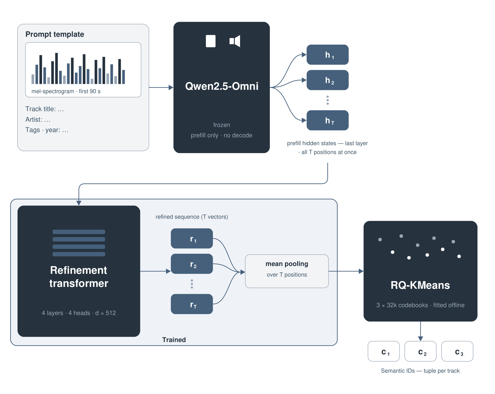
Figure 3.1 最值得注意的是训练能力与服务能力的切分。顶部 frozen Qwen 只负责批量提取内容特征，下面 refinement transformer 才通过协同行为改变几何结构，右侧 RQ-KMeans 再把连续空间变成三层 codebook；线上请求不需要运行 Qwen，也不需要再训练 quantizer。三层 SID 的前缀能让相似曲目共享统计强度，新增或低频曲目也可借助内容邻居获得可生成位置。风险则在离线快照：只有 lifetime plays 达到 500 的曲目才刷新 embedding，目录更新、冷启动和 collision class 的变化都可能造成覆盖滞后，这也与论文最后承认的 catalog coverage 较低相呼应。
2.2 共享 Encoder 与 History Compression：一次编码覆盖长短期兴趣
用户历史由时间排序事件 $u=(e_1,\ldots,e_T)$ 组成。每个事件只读取日志属性：item 侧把 track ID 哈希三次、artist ID 哈希两次并加入时长桶；context 侧使用智能音箱与 organic-feed 标志；feedback 侧使用 like flag 和播放完成率。事件 token 是三组 embedding 之和：
符号解释：$e_t$ 是第 $t$ 个真实历史事件，三项分别编码曲目身份、请求面和反馈；播放完成率为 $p_t/\max(d_t,\epsilon)$，先分桶再嵌入。序列前加一个 learned CLS，训练与 serving 使用同一事件选择规则。这里的“无手工特征”应理解为不依赖旧级联的数百个聚合特征；哈希、分桶、surface flag 和 completion ratio 仍是明确的数据构造。
对最多 8192 个事件做 7–10 层 full self-attention 成本过高。History Compression 把历史分成长块 $O$ 和最近 2048 个事件的块 $R$：先用两个单层 cross-attention 让两块互读；再对拼接序列跑一层 full-history self-attention；然后只对 recent block 跑 7 层深堆叠；最后把长块的浅层输出 $X_O$ 与近期深层输出 $H_R$ 拼接成共享 memory：
符号解释：$K$ 是 decoder 和 Ranking Module 共同 cross-attend 的接口，$X_O$ 保留全部长期位置，$H_R$ 给近期事件更强的非线性表达。深计算没有丢弃老历史，而是把容量倾斜给最近行为。论文给出的注意力量级从全模型的 $\Theta(LN^2d)$ 变为 $\Theta((Ln_r^2+N^2+2n_on_r)d)$，最终配置在相同 8k 历史下接近 full attention 的指标，推理成本约为后者一半。
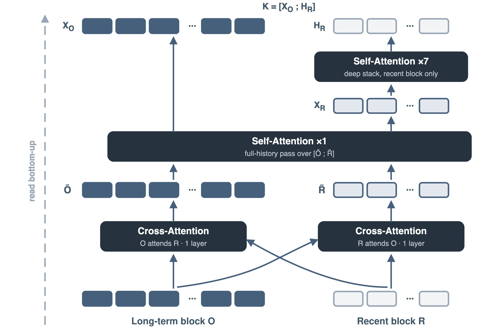
Figure 3.2 需要自下而上读：深色 $O$ 是较老事件，浅色 $R$ 是近期事件。最底部双向 cross-attention 不是简单拼接，它先让长期块感知近期上下文、近期块也能查询长期偏好；中间的单层 self-attention 是唯一一次全历史混合；顶部 7 层只处理 recent block。下游仍能看到两部分拼成的 $K$，所以这种压缩不等于截断到 2k。图的顶部同时保留 $X_O$ 与 $H_R$，表明 decoder/ranker 不只读取 recent summary；如果把老事件压成单个向量，就会变成另一种更激进的瓶颈。工程迁移时还要验证长块浅表征是否足够：音乐复听具有长周期，若换成强时效短视频，$n_r$ 与层分配可能完全不同。
2.3 Decoder 与 Ranking Module：生成召回和逐项排序共用用户状态
Decoder 是两层浅层自回归 Transformer，从 BOS 开始逐层生成三枚 SID。条件概率分解为：
符号解释：$u$ 是用户历史，$K$ 是共享 encoder memory，$s_{<\ell}$ 是已经生成的 code prefix。服务 beam 为 1024，tokenizer trie 会屏蔽无法映射到目录曲目的非法 prefix。SID 不是 collision-free：一个 tuple 常对应少量曲目，系统把完成 tuple 展开为整个 collision class，随后交给 Ranking Module 排序。生成负责高召回，排序负责在同一生成分布内恢复多反馈偏好。
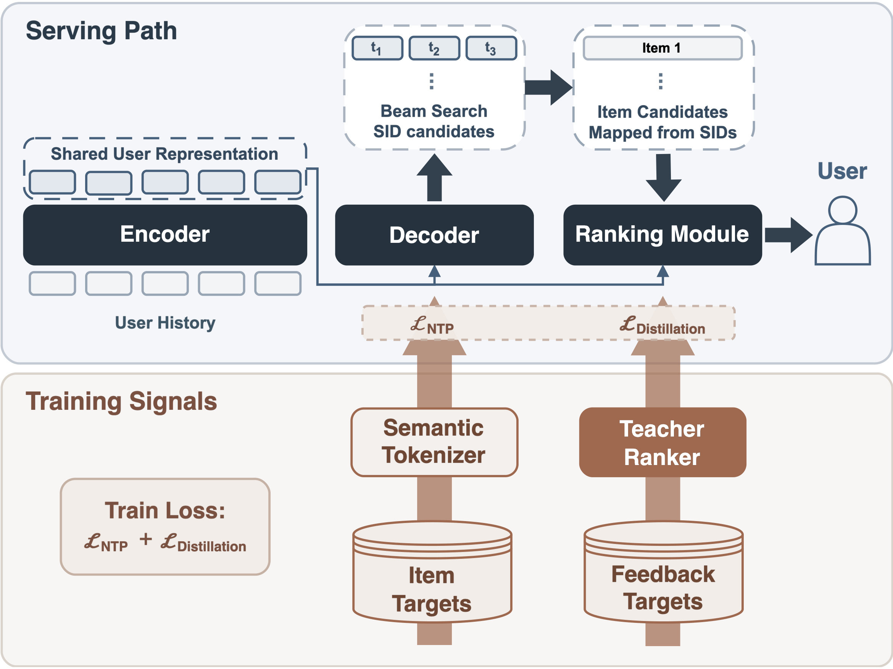
Figure 2.1 把“单模型”的精确定义画得很清楚。上半部 serving path 只有 encoder、decoder、SID mapper 与 Ranking Module；encoder 对 User History 计算一次，decoder 给出 beam，mapper 展开曲目，ranker 输出最终顺序。下半部 Semantic Tokenizer 只产生 NTP targets，Teacher Ranker 只产生 distillation targets，两者在训练后都不随请求执行。两个 loss 都回传共享 encoder，因此用户状态不是先为召回训练、再冻结给排序，而是被两种目标共同塑形。这个耦合是 Sona 相对“生成后外挂一个旧 ranker”的主要差别。
候选 embedding 由 item ID、三个独立 SID code 以及 SID prefix n-gram features 组成，经多组 hash 映射到与 encoder 共享的 embedding table，再拼接投影。4 层 pre-norm cross-attention 让每个候选读取 $K$，输出与 teacher heads 对齐的多反馈分数：
符号解释：$e_i$ 是候选曲目表示，$\tilde e_i$ 是读过用户历史后的表示，$n=2$ 对应论文最终模型卡中的 teacher-head scores。服务端用固定权重把多个 head 合成一个标量；该 combiner 不进入训练 loss。固定权重让业务偏好容易控制，但也意味着模型并未端到端学习最终多目标效用函数。
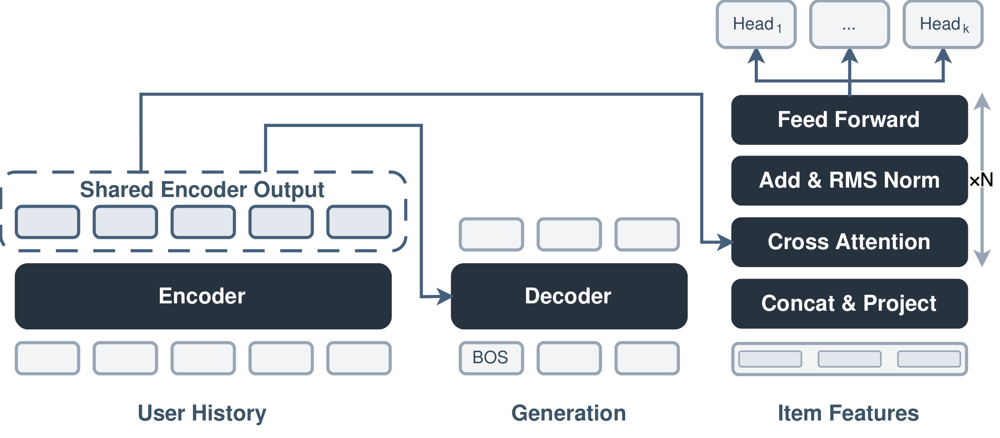
Figure 3.3 比总览更聚焦计算复用：左侧用户历史只经过一次 Encoder，输出同时送到中间 Decoder 和右侧 Ranking Module。Decoder 看到 BOS 与先前 SID，ranker 看到 item/SID/prefix 特征；右上多个 head 保留点赞等不同目标。候选特征在进入 cross-attention 前先 concat/project，因此 ranker 既能区分 collision class 内的具体 track，也能利用共享 SID 前缀的语义。若没有 Ranking Module，beam 只能按生成 likelihood 排序，Table 7.7 显示 Teacher Recall@10 仅 0.0381；加入一层 ranker 后跃升到 0.5654，说明“生成出候选”和“按 teacher 偏好排序”确实是不同问题，不能靠加大 beam 自动互相替代。
2.4 Teacher Ranker 与联合蒸馏：用一年历史监督短窗口 student
Teacher Ranker 的数据单元是用户 timeline，而非 Sona 的 request-level sample。10 层 causal encoder 让时间线上每个位置都携带截至当时的用户状态，6 层 candidate scorer 用自定义 mask 只读取目标发生前的历史。它先在一年日志上做 next-item prediction 预训练，历史长度 2k；再把预训练 encoder 接上随机初始化 scorer，用 8k 历史做 multi-head ranking fine-tuning。主 head 按 like > play > skip > dislike 的等级，构造时间相邻且等级不同的 impression pairs：
符号解释：$P$ 包含同一请求内或相邻请求边界上、较高等级 $i$ 应排在较低等级 $j$ 前的有序对；辅助 heads 使用 pointwise BCE，二者相加训练 teacher。Teacher 总参数约 0.6B，embedding table 占比较大；它不做 History Compression，代价换来完整长历史表示。
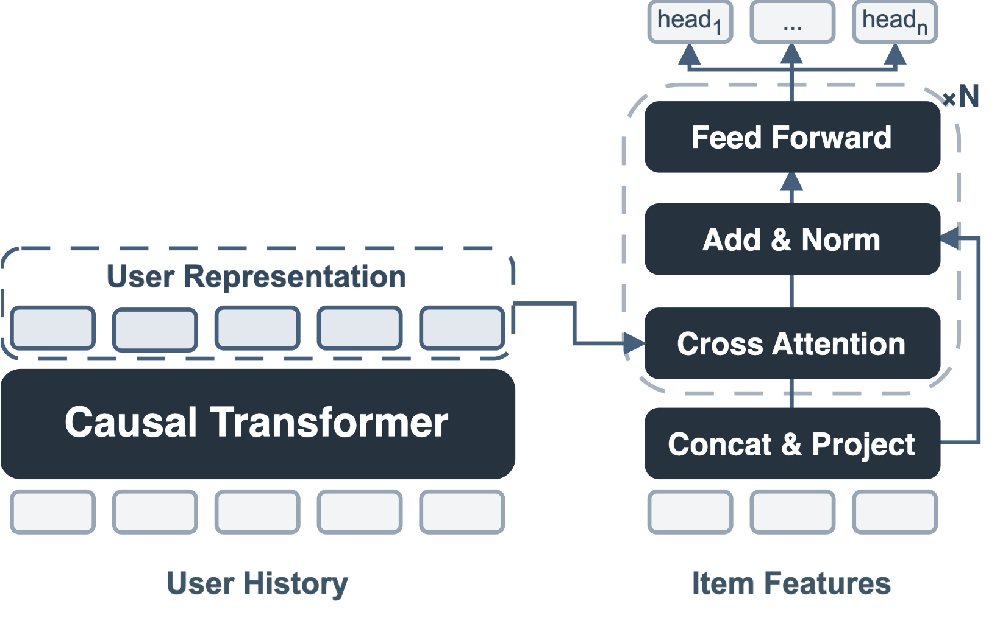
Figure 5.1 左侧 causal Transformer 对整条 typed event sequence 编码，右侧候选表示经过多层 cross-attention 后进入多 head。与 student 的关键差异不是只有“更大”，还包括训练样本打包密度：timeline 一次 encoder pass 可监督其中每个目标，适合压缩一年跨度；Sona 的 request-level 数据覆盖数周，但一个请求中的多个 positives 共享 encoder pass。Teacher 每天用新 session refresh，再每 24 小时把 snapshot 更新到 Sona trainer，长期知识先进入 teacher 权重，再以密集候选分数传给 student。
Sona 的 joint objective 同时使用正反馈曲目的 NTP、当前 decoder beam rollout 和 production logged impressions。Teacher 对 rollout 集合 $\mathcal{B}$ 与曝光集合 $\mathcal{I}$ 的每个候选给出各 head 分数，Ranking Module 用 MAE 回归；整体为：
符号解释：$L_{\mathrm{NTP}}$ 训练 SID 生成，$L_{\mathrm{rollout}}$ 让 ranker 学会处理当前 decoder 真正会生成的候选，$L_{\mathrm{impression}}$ 扩展到生产日志真实曝光分布；最终权重为 1:1:1。Rollout Distillation 的要点是候选分布随 decoder 训练而变化，teacher 信号因此始终追踪 student 的当前错误，而非只在固定离线候选上蒸馏。
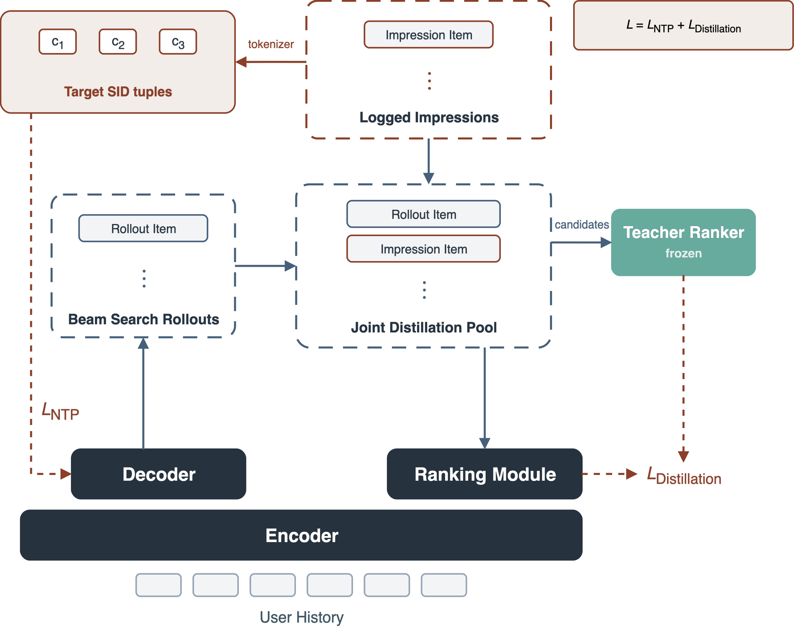
Figure 4.1 的实线和虚线区分了两种监督。左上 Target SID tuples 对 decoder 进行 teacher forcing；中部 beam search 产生 Rollout Item，与 Logged Impressions 一起进入 Joint Distillation Pool；右侧冻结 Teacher Ranker 给出目标分数，Ranking Module 回归。最底部共享 Encoder 同时收到 $L_{\mathrm{NTP}}$ 与蒸馏梯度。Teacher 不直接训练 decoder，但通过共享 encoder 间接改变生成条件表示，这就是论文所说的 generation-ranking alignment。若只用 impressions，Table 7.6 中 Teacher Recall 会大幅下降，印证 rollout 分布不可缺。
2.5 训练与服务基础设施：让连续学习和大 beam 进入线上预算
训练侧把 encoder、decoder、Ranking Module 与冻结 teacher 放在同一组 GPU workers：trainable states 用 FSDP 分片，teacher 以 bfloat16 在每个 rank 复制，避免 teacher all-gather；数据 fetch、CPU preprocessing 与 catalog hash 异步缓冲，计算用 FlashAttention、torch.compile、QK normalization 和 gradient clipping。初训按天从旧到新遍历 request tables，batch 内打乱；上线后保持常数学习率 $7\times10^{-5}$，持续消费按事件时间排序的样本。 在线样本不是把 8192 条历史塞进每个 event message。实时流按用户聚合 session，以至少 15 分钟归因窗口等待反馈和 inference log 到齐；长历史来自批量 KV store，最近 72 小时、最多 1000 个事件来自实时 profile，读取时按时间合并去重。Inference service 在 serving 时写 request ID 与 history cutoff，session aggregator 稍后用同一 ID 回查，并让 inference service 重新读取画像、复用相同 feature-store 路径构建训练样本。这样避免训练历史晚于实际推理历史造成泄漏，也避免事件流携带完整用户画像的带宽膨胀。
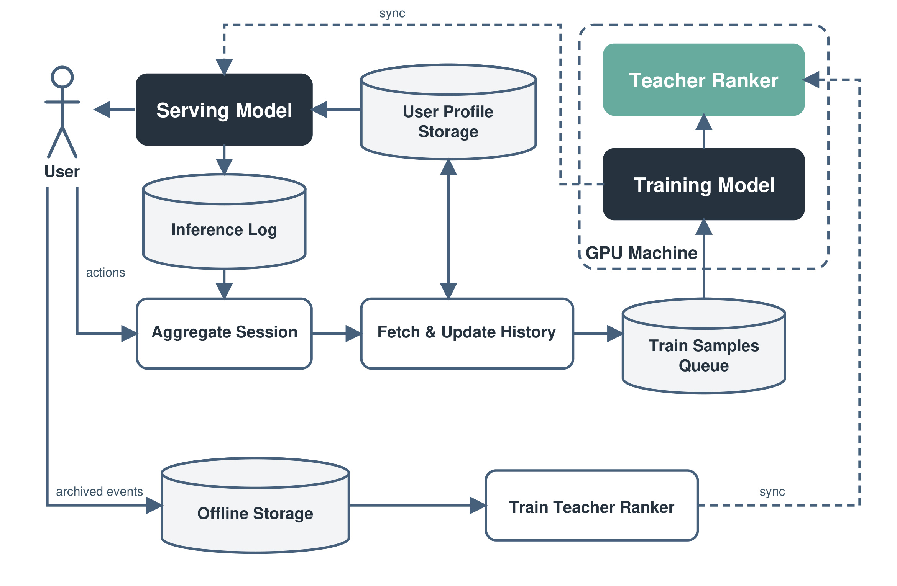
Figure 6.1 中，User actions 先进入 Aggregate Session，再经 Fetch & Update History 形成 Train Samples Queue；GPU Machine 内 Training Model 同时查询 Teacher Ranker，更新后同步 Serving Model。左下 Offline Storage 独立训练 teacher，并把快照同步回 GPU trainer。队列采用 at-least-once delivery，读延迟为秒级；模型每 10 分钟上传并由 serving fleet 拉取，teacher 每 24 小时刷新。事件发出到含该事件更新抵达线上，中位 45 分钟、P99 60 分钟，其中 15 分钟归因窗口和 10 分钟发布 cadence 是主要固定预算。
服务侧由 CPU inference service 组装样本，NVIDIA Triton 异步合并变长历史并 pad 到固定 shape，使整条模型路径可在初始化时 capture 为 CUDA graph。GPU 上 encoder 只跑一次，生成中间候选不落回 CPU；beam=1024、每层 32000 logits 的 top-k 用 radix selector，三步短 decoder 的 self-attention 使用针对“一 token query、极短 KV”的定制 tile，KV cache 随父 beam 重排。论文报告最终推理 MFU 为 41%。这些细节表明，端到端模型的收益不是只靠结构合并，训练数据一致性、candidate 常驻 GPU 和定制 beam kernel 同样是上线条件。
3. 实验结果
3.1 Tokenizer、模型规模与数据规模
离线候选生成实验只评估 NTP encoder–decoder，不含 Ranking Module 和 teacher。Target-track Recall@k 先把每个请求的多个正目标与生成列表匹配，再做 request-level macro average；因此它衡量“目标是否被生成”，不衡量候选内部业务排序。Tokenizer 消融分别控制 codebook size 和 item representation。
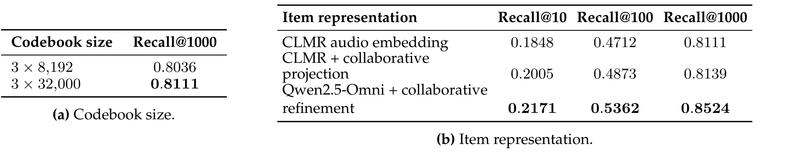
Table 7.2(a) 在同一 CLMR 表示下把 codebook 从三层 8192 扩到三层 32000，Recall@1000 从 0.8036 提升到 0.8111，收益存在但不大。更大的变化来自表示：(b) 中原始 CLMR 为 0.1848/0.4712/0.8111，加入协同 projection 后为 0.2005/0.4873/0.8139，而 Qwen2.5-Omni 多模态内容加 transformer 协同 refinement 达到 Recall@10 0.2171、Recall@100 0.5362、Recall@1000 0.8524。提升在更靠前的 Recall@10/100 上更明显，说明协同 refinement 改善的不只是尾部覆盖，也让相似曲目共享更有用的前缀。
模型规模实验固定 8192 历史、层分配、数据窗和目标，在相同累计 packed-target exposure 下比较 Small、Medium、2×Medium。core parameters 分别为 20M、130M、260M；计入 embedding 与 output heads 的总 learnable counts 为 264M、485M、659M。该区分避免把大 embedding table 的固定开销误当作 transformer 容量。
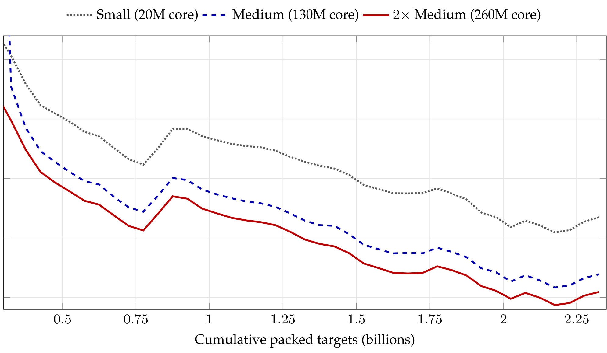
Figure 7.1 的三条曲线在大部分 exposure 上保持从 Small、Medium 到 2×Medium 依次降低，虽然都有阶段性波动，但没有在约 22.5 亿累计 targets 内收敛到同一水平。横轴按 packed targets 而非 wall-clock 时间对齐，使比较更接近相同数据曝光，却没有控制不同模型的实际 FLOPs。作者据此说“所测范围未见平台期”是合理的点估计描述，却不能外推为无限 scaling law：图里只有三档模型、一个训练目标与一段曝光区间，也没有验证更低 loss 必然换来同尺度线上收益。数据量消融另显示训练窗口从 1 周增至 8 周时，Recall@1000 从 0.8333 单调升至 0.8947，支持继续扩大时间覆盖，但同样只是一次 chronological pass 的窗口对照。
3.2 Teacher 与统一模型离线消融
Teacher 的 Weighted Pair Accuracy 按目标等级差对 pair 加权，因此把 like 与 dislike 排错的代价设得高于相近反馈。NIP 预训练把 WPA 从 0.6153 提到 0.6215；8k 历史在 scorer depth 1/2/4/6/8 的每一档都优于 2k，最终选 6 层、8k 的 0.6215，而 8 层 0.6219 只多 0.0004，说明生产选择考虑了边际成本。它证明预训练和长历史有用，但未给出多随机种子方差或置信区间。
统一模型还引入 Teacher Recall@k：在同一个 decoder candidate pool $C_r$ 内，比较 Ranking Module 与 teacher 的 top-k 交集：
符号解释：$R$ 是请求集合，$s_{\mathrm{RM}}^{(r)}$ 与 $s_{\mathrm{teacher}}^{(r)}$ 在同一候选池打分。这个指标只度量条件排序保真度，不奖励生成更多正确曲目，因此必须与 Target-track Recall 和 WPA 一起看。
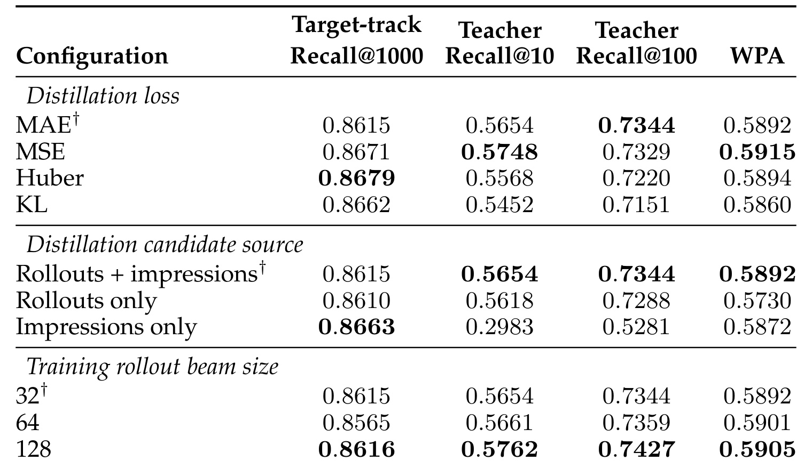
Table 7.6 没有一个 loss 在四个指标上全胜：MSE 的 Teacher Recall@10 0.5748 和 WPA 0.5915 较高，Huber 的 Target-track Recall@1000 0.8679 最高，MAE 则作为稳定、低复杂度基准被保留。候选来源更有解释力：impressions-only 的 retrieval 为 0.8663，但 Teacher Recall@10/100 只有 0.2983/0.5281；加入 current-decoder rollouts 后变为 0.5654/0.7344。训练 beam 从 32 增到 128 可把 Teacher Recall@100 提到 0.7427，却要让 teacher 多打 4 倍 rollout candidates，所以最终选 32 是成本折中，不是离线数值最优。
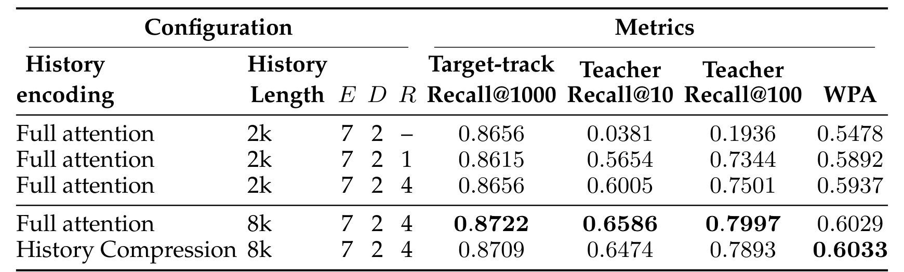
Table 7.7 首行没有 Ranking Module，仅按 decoder likelihood 排序，Teacher Recall@10/100 为 0.0381/0.1936；加一层 ranker 后跃升到 0.5654/0.7344，四层进一步到 0.6005/0.7501，说明生成概率无法替代 item-level 多反馈排序。四层 ranker 下，full attention 从 2k 扩到 8k 后 Target-track Recall@1000 达 0.8722、Teacher Recall@100 达 0.7997；History Compression 8k 略降到 0.8709/0.7893，但 WPA 反而从 0.6029 微升到 0.6033。作者选择压缩版，是以很小离线差异换约一半 encoder inference cost。
3.3 五轮线上 A/B：从 Teacher 辅助到完整替换
线上证据来自 My Vibe 智能音箱流量。除标有 † 的单元格外，treatment–control delta 的显著性为 $p<0.01$；Active Users 是主指标。五轮实验的 control、流量比例和模型配置并不完全相同，必须按各自实验内相对 control 解读，不能把 Experiment 5 与 Experiment 4 的差直接当作 8k History Compression 的因果增益。
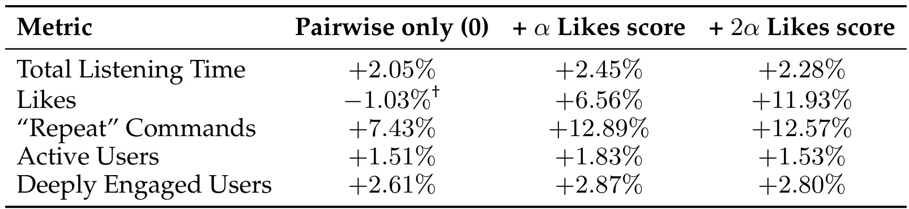
Experiment 1 使用 NTP generator 和在线 Teacher Ranker，每个 treatment 仅 5% 用户。pairwise-only 把 Total Listening Time 提高 2.05%、Active Users 提高 1.51%，但 Likes 为 -1.03% 且不显著；加入 $\alpha$ likes score 后 Likes +6.56%、Active Users +1.83%，加到 $2\alpha$ 时 Likes +11.93% 但 Active Users 回落到 +1.53%。结果说明多目标权重确实改变行为结构，并非“排序更准”会让所有指标同比例上涨。团队因此保留非零 likes score，而没有只追求显式点赞最大化。
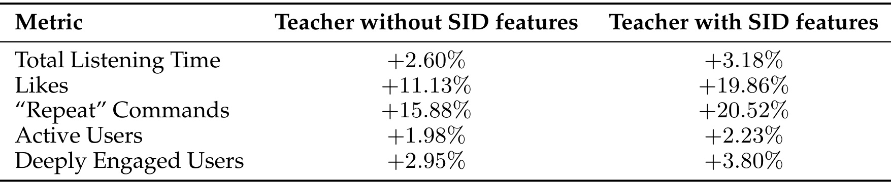
Experiment 2 固定 generator，仅改变 Teacher 是否读取 SID candidate features，每个 treatment 和 control 各 4% 用户。有 SID 时五项点估计都更高：Listening Time 2.60%→3.18%，Likes 11.13%→19.86%，Repeat 15.88%→20.52%，Active Users 1.98%→2.23%，Deeply Engaged Users 2.95%→3.80%。因为唯一处理变量是 teacher 的 SID features，这轮比跨实验比较更接近清晰的组件因果证据：离散语义不仅帮助 decoder 生成，也给 ranker 提供了曲目内容/协同前缀。
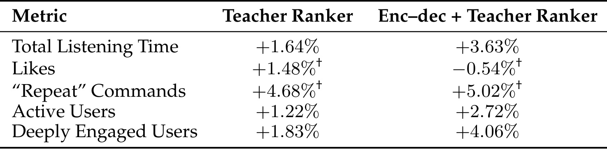
Experiment 3 让两个 treatment 都只用 teacher pairwise score，各占 3% 用户。仅 Teacher Ranker 替换生产 ranker 时 Active Users +1.22%、Listening Time +1.64%；再用 encoder–decoder 替换生产候选生成后，两项变为 +2.72% 和 +3.63%，Deeply Engaged Users 也从 +1.83% 到 +4.06%。Likes 与 Repeat 的单元格带 †，不应解读为显著变化。由于两列仍共用在线 teacher，这里主要回答 candidate source 是否值得替换，不能证明 student 已达到 teacher。这个阶段说明 generator+teacher 有希望替换全栈，但 teacher 在线参与使成本高、流量小，仍不是最终方案。
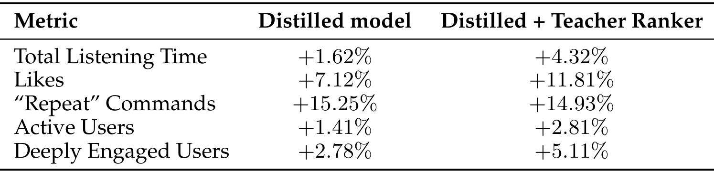
Experiment 4 固定 joint-trained encoder–decoder 和 2k 历史，每组 8% 用户，比较仅用蒸馏 Ranking Module 与额外在线 Teacher Ranker。纯 distilled model 已能相对 control 提升 Listening Time +1.62%、Likes +7.12%、Repeat +15.25%、Active Users +1.41%、Deeply Engaged Users +2.78%，证明 teacher 可以从 serving path 移除；加 teacher 后除 Repeat 点估计略低外，其余指标更高，表明 student 仍未完全复制 teacher。蒸馏的价值因此是可服务性，而不是宣称无损复制。
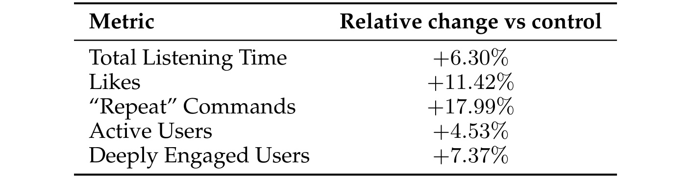
Experiment 5 把历史扩到 8192，并启用 History Compression；control 与 Sona 各含随机选取的 15% 用户，运行 7 天，生产硬规则保持不变。最终五项都显著上升：Total Listening Time +6.30%、Likes +11.42%、Repeat Commands +17.99%、Active Users +4.53%、Deeply Engaged Users +7.37%。其中 Active Users 是预先声明的主指标，五项同向也降低了“只优化一个代理指标”的担忧，但仍不能排除同源行为指标的相关性。论文没有披露绝对基线、置信区间和用户数，所以这些百分比能说明实验内相对 uplift，却不能用于估计绝对业务规模或跨平台效果。
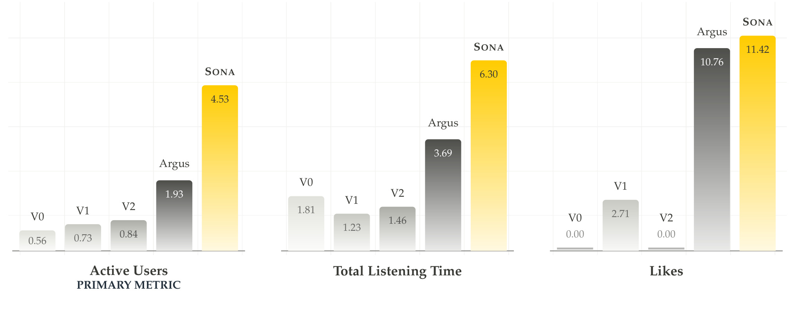
Figure 1 把最终结果放回连续部署历史。柱高表示每一代上线相对当时 production control 的增量，而之前部署已保留在 control 中；三个 panel 使用独立纵轴，不能横向比较柱子的视觉高度。Active Users 上，V0/V1/V2/Argus 的增量依次为 0.56%、0.73%、0.84%、1.93%，Sona 为 4.53%，是 Argus 增量的 2.35 倍。Listening Time 的 Sona 增量为 6.30%，Likes 为 11.42%；Likes 面板中 V0/V2 为 0，也说明历史版本并非每项都持续正增量。这是一种很强的“在已有改进之上继续增量”证据，但仍局限于一个 surface、一个设备场景与七天实验。
4. 总结
4.1 我的判断与工程启发
Sona 最有说服力的贡献不是新造一个 decoder，而是把四个长期分离的问题放进同一闭环：用内容加协同行为训练 Semantic ID；用共享 encoder 连接生成与 item-level ranking；用一年日志训练的大 teacher 对 current-decoder rollouts 与真实 impressions 做密集蒸馏；再以 History Compression、连续训练和定制 GPU kernel 把该结构送进生产。逐轮 A/B 也比只给最终大数字更可信，因为 SID features、teacher、distillation 和完整替换都留下了中间证据。
对推荐系统工程，最可迁移的原则有三点。其一，统一召回与排序前先统一用户状态和候选语义，否则只是把两个模型塞进一个容器。其二，蒸馏候选必须覆盖 student 当前会生成的分布；只用 production impressions 会在 Table 7.6 上丢失大量 Teacher Recall。其三，长历史价值与服务成本要共同消融，History Compression 的选择来自“接近 full attention 的质量 + 约半成本”，而不是单一指标冠军。对大模型训练，这套 timeline teacher/request student 的组合类似先用高密度自回归目标吸收长期数据，再把知识压入可服务模型；它也提示个性化 Agent 可以把大记忆 teacher 留在异步学习侧，而不是每次调用都读取全部历史。
4.2 局限、复现边界与后续跟进
主要局限至少包括以下六点：
- 线上实验只覆盖 Yandex Music 的 My Vibe 智能音箱面，音乐的被动消费和复听结构不能直接外推到电商、短视频或搜索。
- 最终实验为 7 天、每组 15% 用户，尚未做论文自己要求的多月长期验证，也未全流量部署；新鲜内容、用户疲劳和长期探索仍未被充分观察。
- 报告承认 catalog coverage 低于生产级联。三层 SID、曲目 eligibility、embedding refresh threshold 和 collision class 都可能影响长尾覆盖。
- 论文未披露绝对指标基线、样本量、置信区间、完整显著性校正、端到端 GPU 成本或与旧级联的总资源对比；MFU 41% 不能替代成本报告。
- 数据、Teacher Ranker、在线画像与流处理基础设施闭源，外部研究者只能复现局部结构，无法复核线上 uplift 或数据选择偏差。
- 五轮 A/B 是不同时间、control 和流量配置的实验。特别是 Experiment 4 与 5 的差异不能单独归因于 2k→8k 历史，因为模型配方与实验环境同时变化。
后续最值得跟进三组验证。第一，等待多月和其他 surface 的结果，尤其检查 catalog coverage、fresh content exploration 与重复播放是否出现反作用；这是决定能否全量替换级联的前置条件。第二，做严格的成本分解：encoder、beam top-k、Ranking Module、online teacher scoring 各占多少训练/推理资源，并把“约半 attention cost”转换为真实吞吐与延迟。第三，复现一个公开小规模版本时，应优先重做 Table 7.6 的候选源消融和 Table 7.7 的无 ranker/一层/四层对照，而不是只追最终 Recall；这两组实验最能判断 rollout distillation 与共享排序模块是否真的成立。还应关注论文提出但尚未验证的 RL、MoE、稀疏/线性注意力、persistent cross-request KV cache 和 test-time beam scaling，避免把未来方向误写成当前系统能力。